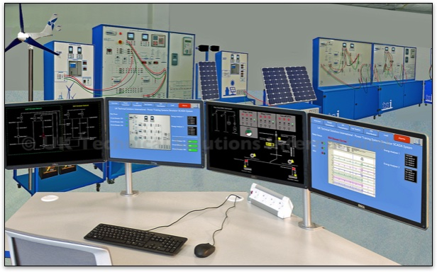
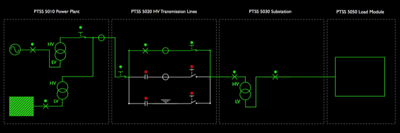

TSI-PTSS 50100-SG SCADA software system and SMART Grid
The SCADA software system is used to monitor and control the PTSS power training system simulator. It gathers information on the different operating parameters and transfers the information back to a central computer.
It alerts the home station when problems occur, carrying out necessary analysis and control, such as determining if the problem is critical, and displaying the information in a logical and organised fashion.
The SCADA station is a complete integrated system based around a 120-degree desk with a Windows PC and four flat-screen LED monitors. The workstation is height adjustable and is supplied complete with a high-back operators chair.
The TSI PTSS SCADA system is connected to the master control PLC which connects to the various units as well as to the digital measuring instruments and protective relays. It is based on a single full server and a series of control clients. This enables a number of remote stations to be set up around the simulator giving individual students the opportunity to control and monitor the system.
It has a unique design philosophy based around standard single line electrical diagrams. Each unit in the PTSS system has its own circuit block within the SCADA programme and they can be interconnected to meet the needs of the different control tasks we set for the trainees.
Control and indication parameters include:
Generation:
- Static generator control
- Generator voltage and current
- Generator AC motor speed
- Generator magnetising current
- Synchroscope
- Digital multifunction 3-phase instruments for measuring voltage, current, active power, reactive power and harmonics.
- Distance protection relay flags
- Differential protection relay flags
- Power indicators
- Circuit breaker status
HV Transmission:
- Digital multifunction 3-phase instruments for measuring voltage, current, active power, reactive power
- Power indicators
- Circuit breaker status
- Line switches status
- Line indicators status
- Line load
Substation:
- Digital multifunction 3-phase instruments for measuring voltage, current, active power, reactive power
- Distance protection relay flags
- Differential protection relay flags
- Multifunction relay status
- Line indicators
- Power indicators
- Circuit breaker status
MV Transmission:
- Digital multifunction 3-phase instruments for measuring voltage, current, active power, reactive
- Power indicators
- Circuit breaker status
- Line switches status
- Line indicators status
- Line load
RCL Load:
- RCL Load measurements for all three lines via Digital multifunction 3-phase instrument readings
Power Factor Correction:
- Current power factor
- Set power factor
- Weekly average power factor
- Voltage
- Current,
- Reactive power of the system
The Smart Grid application is powered by the SCADA system and uses the MODBUS data communication network that is controlled by the master PLC system. It takes information from the various digital multifunction meters in the system to perform smart grid operational functions.
A Smart Grid provides "intelligent distribution" of electricity. By installing Smart Meters at points of consumption we can measure on-time power demand and change the available supply accordingly. The system can detect any potential overload of energy and excess energy can be redistributed to other areas that need it, based on the actual requests from end users.
The PTSS Smart Grid Application allows the system to be configured as follows:
Simulated Power Generation Sources:
- Traditional Energy Source - Carbon (Gas, Oil or Coal) (PTSS 5010)
- Renewable - Wind (PTSS 5070)
- Renewable - Solar PV (PTSS 5080)
Transmission and Substation
- HV Transmission (PTSS 5020)
- Sub Station (PTSS 5030)
- MV Distribution (PTSS 5040)
Loads
- Domestic and Industrial Loads (PTSS 5050)
Smart Grid Controller
- PTSS 50100-SG SCADA Control System - Smart Grid